O noapte pe Secția B
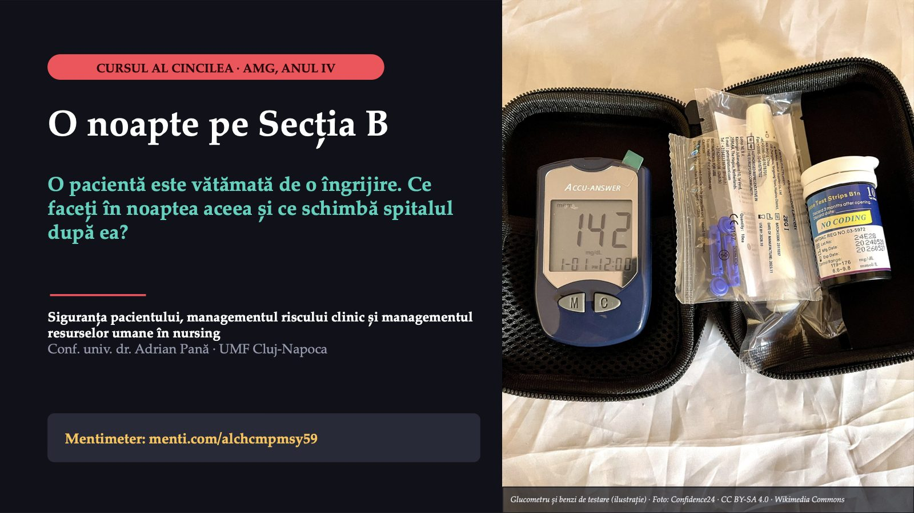
1 / 65Cursul de azi pornește de la o singură noapte pe o secție de medicină internă. O pacientă este vătămată de o îngrijire, nu de boala ei. Urmărim două întrebări: ce face asistentul medical în noaptea aceea și ce schimbă spitalul după ea. Codul Mentimeter de pe ecran rămâne același pe tot parcursul cursului, iar linkul este și în chat.
Noaptea de miercuri spre joi, pe Secția B
 2 / 65
2 / 65Cazul este construit pentru curs: detaliile sunt plauzibile, dar instituțiile și persoanele nu există. Secția B este o secție de medicină internă a Spitalului A, un spital județean. În noaptea de miercuri spre joi, Ioana B. este singura asistentă medicală de serviciu, cu o infirmieră, pentru douăzeci și patru de pacienți. Pentru ea este a treia noapte consecutivă de douăsprezece ore, iar medicul de gardă acoperă și secția vecină. Doamna M. are șaptezeci și unu de ani, diabet zaharat de tip 2 și primește insulină. Indicația de seară pentru insulina rapidă este scrisă de mână, iar cifra se poate citi și „patru”, și „patruzeci”, fără unitatea de măsură scrisă clar. Rețineți aceste detalii: fiecare va conta mai târziu, în analiza cauzelor.
Ați văzut în stagiu o greșeală sau aproape o greșeală?
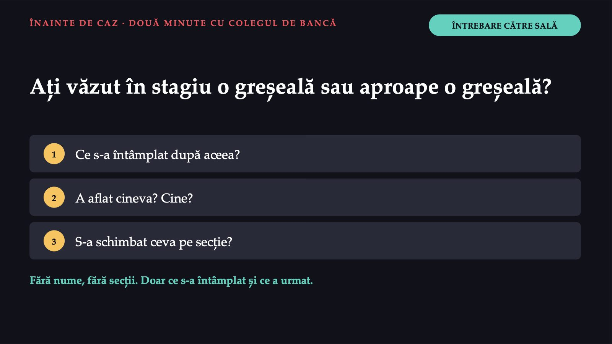
3 / 65Înainte să mergem mai departe cu cazul, gândiți-vă la propriul stagiu. Ați văzut o greșeală sau o greșeală oprită la timp? Ce s-a întâmplat după aceea, a aflat cineva și s-a schimbat ceva pe secție? Scrieți în chat, în două-trei rânduri, fără nume de persoane și fără numele secției: contează numai ce s-a întâmplat și ce a urmat.
Pericol, incident care nu a ajuns la pacient sau eveniment advers?
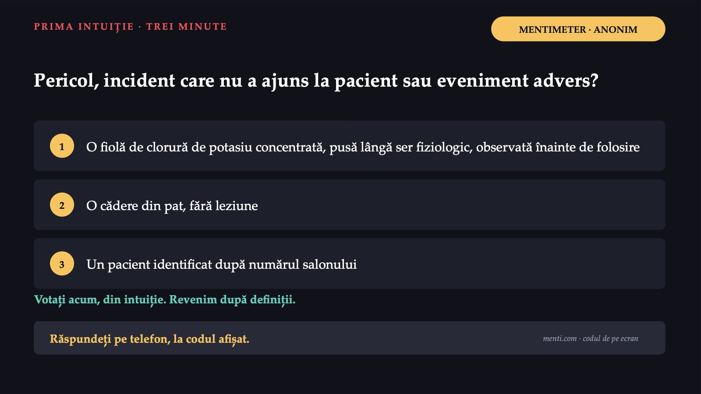
4 / 65Primul vot este din intuiție, înainte de orice definiție. Aveți trei situații: o fiolă de clorură de potasiu concentrată pusă lângă ser fiziologic și observată înainte de folosire, o cădere din pat fără leziune și un pacient identificat după numărul salonului. Pentru fiecare, alegeți pe Mentimeter: pericol, incident care nu a ajuns la pacient sau eveniment advers. Revenim la vot după definiții.
Două părți, aceeași noapte
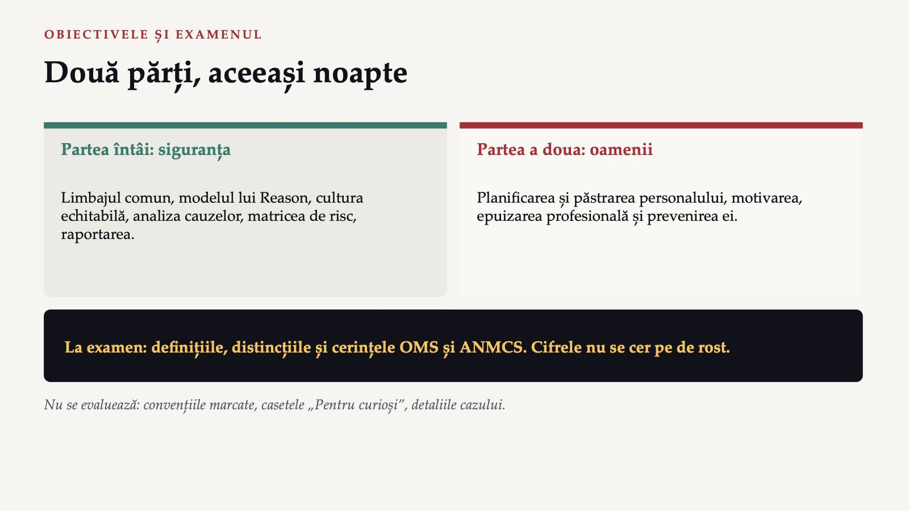
5 / 65Cursul are două părți, legate de aceeași noapte. Prima parte privește siguranța pacientului: limbajul comun, modelul lui Reason, cultura echitabilă, analiza cauzelor, matricea de risc și raportarea. A doua parte privește oamenii: planificarea și păstrarea personalului, motivarea, epuizarea profesională și prevenirea ei. La examen se cer definițiile, distincțiile dintre termeni și cerințele Organizației Mondiale a Sănătății (OMS) și ale Autorității Naționale de Management al Calității în Sănătate (ANMCS). Cifrele nu se cer pe de rost, iar convențiile marcate ale cursului, casetele „Pentru curioși” și detaliile cazului nu se evaluează.
Înainte de miezul nopții, la turul de noapte
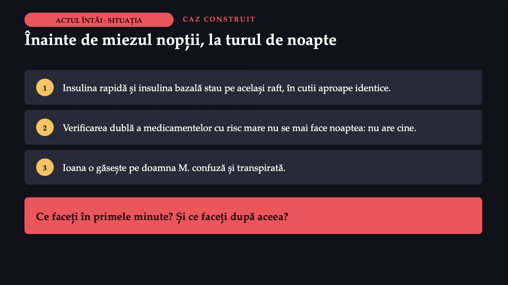
6 / 65Ne întoarcem pe Secția B, înainte de miezul nopții. Insulina rapidă și insulina bazală stau pe același raft al frigiderului, în cutii aproape identice. Procedura secției prevede verificarea dublă a medicamentelor cu risc mare, dar de câteva luni ea nu se mai face noaptea, pentru că nu are cine să o facă. La turul de noapte, Ioana o găsește pe doamna M. confuză și transpirată. Cazul pune acum două întrebări practice. Prima: ce faceți în primele minute? A doua, după ce pacienta este în afara pericolului: ce faceți cu ce s-a întâmplat? Cu a doua întrebare mergem la vot.
Este trecut de miezul nopții; doamna M. și-a revenit. Ce faceți, în ordine?
![MENTIMETER · ANONIM DECIZIA 1 · PRIMUL VOT, FĂRĂ DISCUȚIE Este trecut de miezul nopții; doamna M. și-a revenit. Ce faceți, în ordine? a Consemnați în foaia de observație, anunțați medicul și completați fișa de raportare a evenimentului advers, în termenul procedurii spitalului b Consemnați glicemia și tratamentul, dar nu raportați: pacienta și-a revenit fără urmări c Nu completați nimic până dimineață; asistenta-șefă decide dacă se raportează d Consemnați numai în caietul de predare a turei, fără fișa de raportare Răspundeți pe telefon, la codul afișat. menti.com · codul de pe ecran](diapozitive/C05/007.jpg) 7 / 65
7 / 65Este trecut de miezul nopții, iar doamna M. și-a revenit. Întrebarea privește ce faceți, în ordine, cu ceea ce s-a întâmplat. Citiți cele patru variante: consemnarea, anunțarea medicului și raportarea; consemnarea fără raportare; amânarea până dimineață; consemnarea numai în caietul de predare. Votați individual pe Mentimeter, fără să scrieți încă nimic în chat: ne interesează prima voastră decizie.
Aceeași întrebare: ce faceți, în ordine?
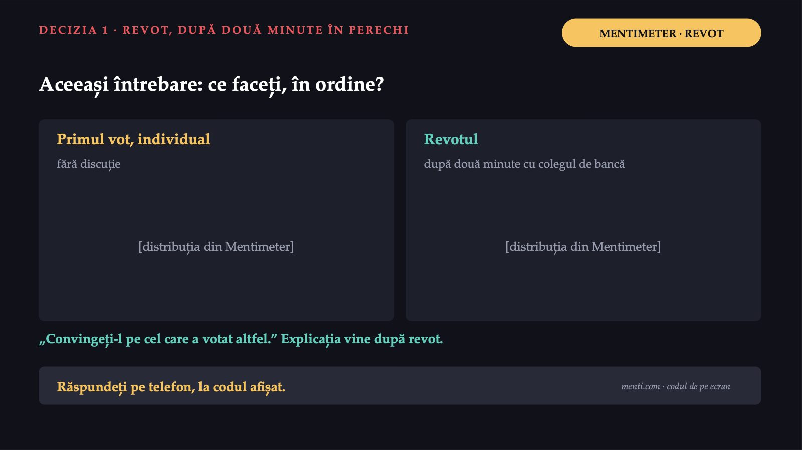
8 / 65Acum aveți două minute de discuție în chat. Dacă ați votat altfel decât un coleg, încercați să-l convingeți; cine vrea să spună cu voce tare folosește reacția «mână ridicată» din Teams. Apoi votați din nou, pe Mentimeter, aceeași întrebare. Pe ecran vor apărea ambele distribuții, ca să vedem cât s-au schimbat voturile după discuție. Explicația vine numai după revot.
Pacientul întâi, apoi documentul
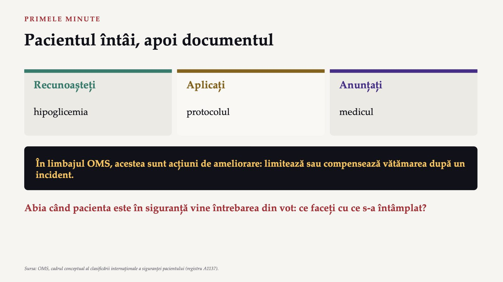
9 / 65Înainte de răspunsul la vot, să fixăm ordinea. Primul lucru este pacientul: recunoașterea hipoglicemiei, aplicarea protocolului, anunțarea medicului. În limbajul OMS, acestea sunt acțiuni de ameliorare, adică acțiuni care limitează sau compensează vătămarea după un incident. Documentul vine după aceea, nu înainte. Abia când doamna M. este în siguranță apare întrebarea din vot: ce se face cu ceea ce s-a întâmplat? Aici se despart variantele pe care le-ați votat, pentru că fiecare tratează altfel consemnarea și raportarea. Să le luăm pe rând.
(a): consemnați, anunțați, raportați
![RĂSPUNSUL DECIZIA 1 (a): consemnați, anunțați, raportați ANMCS cere unității să raporteze și să analizeze evenimentele adverse și incidentele care nu au ajuns la pacient, în sistemul intern, după procedura spitalului. (b) Confundă absența sechelelor cu absența evenimentului: doamna M. a fost vătămată. (c) Amână consemnarea și lasă altcuiva obligația celui care a constatat evenimentul. (d) Caietul informează colega, dar nu duce evenimentul la analiza cerută. Sursa: standardele ANMCS, ediția a III-a (registru A1070). Circuitul spre nivelul național nu este descris în note.](diapozitive/C05/010.jpg) 10 / 65
10 / 65Varianta potrivită este (a): consemnați în foaia de observație ce s-a întâmplat și ce s-a făcut, anunțați medicul și completați fișa de raportare a evenimentului advers, în termenul procedurii spitalului. Standardele ANMCS în vigoare cer ca unitatea sanitară să raporteze și să analizeze evenimentele adverse și incidentele care nu au ajuns la pacient și să folosească concluziile ca ele să nu se repete. Celelalte variante arată barierele obișnuite ale raportării. Varianta (b) confundă absența sechelelor cu absența evenimentului: doamna M. a fost vătămată, chiar dacă și-a revenit. Varianta (c) amână consemnarea și lasă altcuiva o obligație care ține de cel care a constatat evenimentul. Varianta (d) informează colega de tură, dar nu duce evenimentul la analiza cerută unității. Circuitul raportării spre nivelul național nu este descris în notele cursului.
Ce este siguranța pacientului
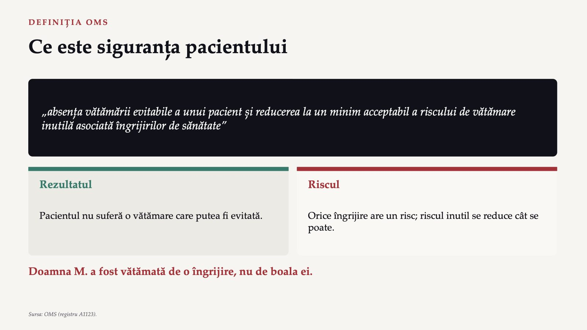
11 / 65Ca să numim corect ce s-a întâmplat, pornim de la definiție. OMS definește siguranța pacientului ca absența vătămării evitabile a unui pacient și reducerea la un minim acceptabil a riscului de vătămare inutilă asociată îngrijirilor de sănătate. Definiția are două părți. Prima privește rezultatul: pacientul nu trebuie să sufere o vătămare care putea fi evitată. A doua privește riscul: orice îngrijire are un risc, dar riscul care nu este necesar se reduce cât se poate. Doamna M. a fost vătămată de o îngrijire, nu de boala ei: hipoglicemia nu a fost o complicație a diabetului, ci urmarea unei doze greșite. Este exact ceea ce definiția numește vătămare evitabilă.
1 din 10
![OMS, FIȘA INFORMATIVĂ, 2023 Problema nu este rară 1 din 10 pacienți vătămați în cursul îngrijirilor 3 milioane de decese pe an, peste, din îngrijiri nesigure 1 din 20 pacienți: vătămări care ar putea fi prevenite (peste 50%) Jumătate din vătămările evitabile sunt legate de medicamente: un pacient din 30; peste un sfert sunt severe. Estimări din studii diferite: ordinul de mărime, nu frecvența pe secție. Sursa: OMS, fișa informativă despre siguranța pacientului, 2023 (registru A1124, A1125, A1126). Cifrele nu se cer pe de rost.](diapozitive/C05/012.jpg) 12 / 65
12 / 65Problema nu este rară. Potrivit fișei informative a OMS din 2023, aproximativ un pacient din 10 este vătămat în cursul îngrijirilor, iar peste 3 milioane de decese pe an se produc din cauza îngrijirilor nesigure. Peste 50% din aceste vătămări, adică aproximativ un pacient din 20, ar putea fi prevenite. Jumătate din vătămările evitabile sunt legate de medicamente: vătămarea legată de medicamente afectează un pacient din 30, iar peste un sfert din aceste vătămări sunt severe sau pun viața în pericol. Sunt estimări globale, adunate din studii diferite. Ele arată ordinul de mărime al problemei, nu frecvența pe o secție anume, și nu se cer pe de rost.
Unde privește munca asistentului
![EVENIMENTELE ADVERSE FRECVENTE, DUPĂ OMS Unde privește munca asistentului 3–5 la 1 000 zile de spitalizare: căderile, cele mai frecvente; peste o treime produc o leziune peste 1 din 10 pacienți adulți internați au escare 7,1% pacienți cu o infecție asociată asistenței medicale, într-o zi Lista OMS mai cuprinde: erorile de medicație, procedurile chirurgicale nesigure, erorile de diagnostic, identificarea greșită, transfuziile nesigure, tromboembolismul venos. Surse: OMS (registru A1127, A1128, A1129); ancheta europeană de prevalență ECDC (registru A1055).](diapozitive/C05/013.jpg) 13 / 65
13 / 65Dintre evenimentele adverse frecvente enumerate de OMS, câteva privesc direct munca asistentului medical. Căderile sunt cele mai frecvente evenimente adverse din spitale: apar cu o frecvență de 3–5 la 1 000 de zile de spitalizare, iar peste o treime dintre ele produc o leziune. Escarele afectează peste un pacient adult internat din 10. Infecțiile asociate asistenței medicale se tratează la cursul despre bolile transmisibile; aici reținem doar că cea mai recentă anchetă europeană de prevalență a găsit, într-o singură zi de observație, cel puțin o astfel de infecție la 7,1% dintre pacienții internați, cu valori între 3,1% și 13,8% între țări. Lista OMS mai cuprinde erorile de medicație, procedurile chirurgicale nesigure, erorile de diagnostic, identificarea greșită a pacientului, transfuziile nesigure și tromboembolismul venos.
Evenimentul advers
 14 / 65
14 / 65Ca o raportare să servească la ceva, toți trebuie să numească la fel lucrurile. OMS a propus un cadru conceptual pentru clasificarea internațională a siguranței pacientului, din care vin definițiile următoare. Incidentul este orice abatere de la îngrijirea obișnuită care fie produce o leziune pacientului, fie îl expune unui risc de vătămare; termenul include erorile, evenimentele adverse evitabile și pericolele. Evenimentul advers este un incident care produce o vătămare evitabilă unui pacient. Reacția adversă este altceva: o vătămare neașteptată și imposibil de prevenit, produsă de o acțiune justificată, făcută corect. Diferența dintre ele ține deci de caracterul evitabil al vătămării.
Incidentul care nu a ajuns la pacient (near miss)
 15 / 65
15 / 65Al doilea grup de termeni. Incidentul care nu a ajuns la pacient, numit în engleză near miss, este exact ce spune numele: de pildă, o doză greșită observată înainte de administrare. Eroarea este eșecul de a duce la capăt o acțiune planificată, așa cum a fost intenționată, sau aplicarea unui plan greșit. Pericolul, sau hazardul, este o împrejurare, un agent sau o acțiune care poate produce o vătămare. Factorul contributiv este o împrejurare, o acțiune sau o influență care pare să fi avut un rol în apariția sau evoluția unui incident ori care crește riscul de incident. Cu acești termeni putem descrie acum cazul doamnei M.
Pericol, eroare, eveniment advers
![CAZUL, ÎN LIMBAJUL COMUN Pericol, eroare, eveniment advers Pericolul insulina rapidă, în cutia aproape identică cu insulina bazală Eroarea patruzeci de unități administrate în loc de patru Evenimentul advers hipoglicemia doamnei M. Observată înainte de administrare, confuzia ar fi fost un near miss. Evenimentul santinelă: neașteptat, cu deces sau vătămare gravă ori riscul acestora. „Never event”: inacceptabil, ca operația pe partea greșită. Sursa: OMS (registru A1137); prioritizarea după probabilitate și severitate: standardele ANMCS (registru A1142).](diapozitive/C05/016.jpg) 16 / 65
16 / 65Să punem cazul în limbajul comun. Insulina rapidă din cutia aproape identică cu insulina bazală este un pericol. Doza de patruzeci de unități administrată în loc de patru este o eroare. Hipoglicemia doamnei M. este un eveniment advers. Dacă Ioana ar fi observat confuzia înainte de administrare, ar fi fost un incident care nu a ajuns la pacient. Doi termeni mai rămân. Evenimentul santinelă este un eveniment neașteptat care implică decesul sau o vătămare fizică ori psihică gravă sau riscul acestora. Evenimentul care nu ar trebui să se întâmple niciodată, în engleză never event, este un incident cu vătămare gravă sau deces, de felul celor socotite inacceptabile, cum este operația pe partea greșită.
Cele trei situații, clasificate
![RĂSPUNSUL PRIMA INTUIȚIE, VERIFICATĂ Cele trei situații, clasificate Fiola de potasiu, observată în sertar înainte de folosire Pericol: încă nimic nu s-a abătut de la îngrijire. Căderea din pat fără leziune Incident: pacient expus unui risc; fără vătămare, nu e eveniment advers. Pacientul identificat după numărul salonului Pericol: o practică ce poate produce o vătămare. ANMCS cere cel puțin doi identificatori independenți înaintea tratamentului. Surse: OMS (registru A1137); standardele ANMCS, ediția a III-a (registru A1065).](diapozitive/C05/017.jpg) 17 / 65
17 / 65Să ne întoarcem la primul vot, cel din intuiție. Fiola de clorură de potasiu concentrată, observată în sertar înainte de folosire, este un pericol: încă nimic nu s-a abătut de la îngrijire. Căderea din pat fără leziune este un incident: pacientul a fost expus unui risc de vătămare, dar, fără vătămare, nu este un eveniment advers. Pacientul identificat după numărul salonului este tot un pericol: o practică ce poate produce o vătămare. Standardele ANMCS cer ca pacientul să fie identificat prin cel puțin doi identificatori independenți înaintea tratamentului, a recoltării, a transfuziei și a altor acțiuni cu risc de confuzie. Comparați aceste clasificări cu ce ați votat la început.
„Pacienta nu a rămas cu nicio urmare, deci nu a existat niciun eveniment advers și nu are rost să raportăm.”
![DE VERIFICAT ADEVĂRAT SAU FALS? „Pacienta nu a rămas cu nicio urmare, deci nu a existat niciun eveniment advers și nu are rost să raportăm.” Ce arată definiția Evenimentul advers cere vătămare evitabilă, nu permanentă; hipoglicemia tratată la timp e vătămare. Ce cer standardele ANMCS cere raportarea și a incidentelor care nu au ajuns la pacient. Raportarea valorează prin ce învață sistemul, nu prin gravitatea urmărilor. Surse: OMS (registru A1137); standardele ANMCS, ediția a III-a (registru A1070).](diapozitive/C05/018.jpg) 18 / 65
18 / 65O afirmație pe care o veți auzi pe secții: pacienta nu a rămas cu nicio urmare, deci nu a existat niciun eveniment advers și nu are rost să raportăm. Adevărat sau fals? Scrieți în chat. Definiția OMS a evenimentului advers cere o vătămare evitabilă, nu o vătămare permanentă; hipoglicemia tratată la timp este o vătămare. Standardele ANMCS cer, în plus, raportarea chiar și a incidentelor care nu au ajuns la pacient. Afirmația este deci falsă. Principiul general: valoarea unei raportări vine din ce învață sistemul din ea, nu din cât de grave au fost urmările. Cu asta închidem actul întâi.
Dimineața, asistenta-șefă citește fișa
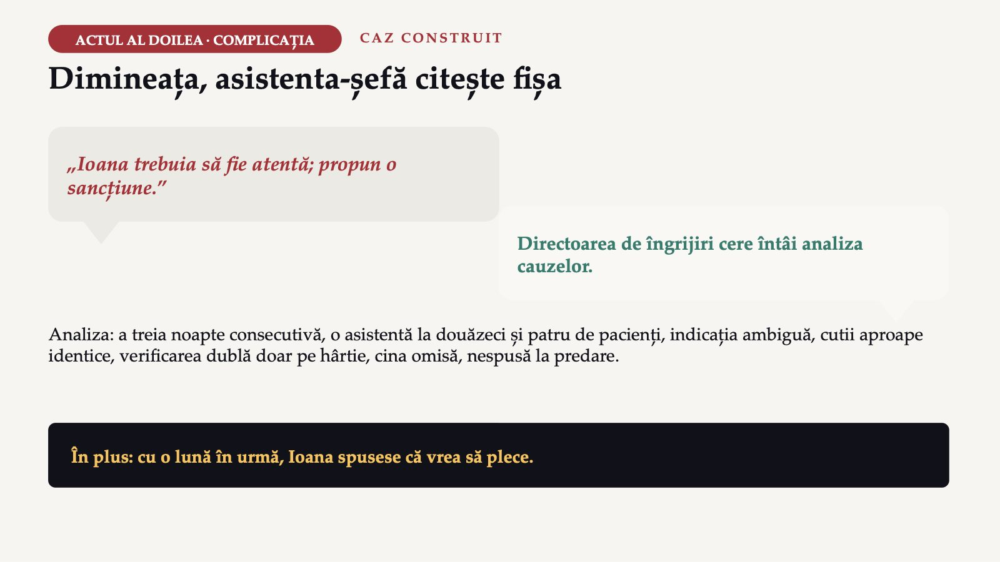
19 / 65Actul al doilea începe dimineața. Asistenta-șefă a Secției B citește fișa de raportare, iar prima ei reacție, spusă în fața colegilor, este că Ioana trebuia să fie atentă și că propune o sancțiune. Directoarea de îngrijiri a spitalului cere însă o analiză a cauzelor înaintea oricărei decizii. Analiza descoperă ce știți deja: a treia noapte consecutivă, o asistentă la douăzeci și patru de pacienți, o indicație scrisă ambiguu, cutii aproape identice, o verificare dublă care exista pe hârtie, dar nu se mai făcea, o predare de tură fără informația despre cina neterminată. Mai iese la iveală ceva: cu o lună în urmă, Ioana îi spusese asistentei-șefe că se gândește să plece din spital.
Cum ar trebui să răspundă spitalul în privința Ioanei?
![MENTIMETER · ANONIM DECIZIA 2 · PRIMUL VOT, FĂRĂ DISCUȚIE Cum ar trebui să răspundă spitalul în privința Ioanei? a Consiliere și sprijin pentru ea; schimbările se fac în sistem (verificarea dublă posibilă noaptea, insuline separate, indicații clare) b Sancțiune disciplinară: a încălcat procedura verificării duble c Discuție de îndrumare cu Ioana despre verificarea dublă, plus reproiectarea procedurii pentru toată secția d Nicio măsură: vina este numai a sistemului Răspundeți pe telefon, la codul afișat. menti.com · codul de pe ecran](diapozitive/C05/020.jpg) 20 / 65
20 / 65A doua decizie: cum ar trebui să răspundă spitalul în privința Ioanei? Aveți patru variante: consiliere și sprijin pentru ea, cu schimbări în sistem; o sancțiune disciplinară pentru încălcarea procedurii verificării duble; o discuție de îndrumare cu Ioana, plus reproiectarea procedurii pentru toată secția; nicio măsură, pentru că vina ar fi numai a sistemului. Votați individual, fără discuție.
Aceeași întrebare: cum răspunde spitalul?
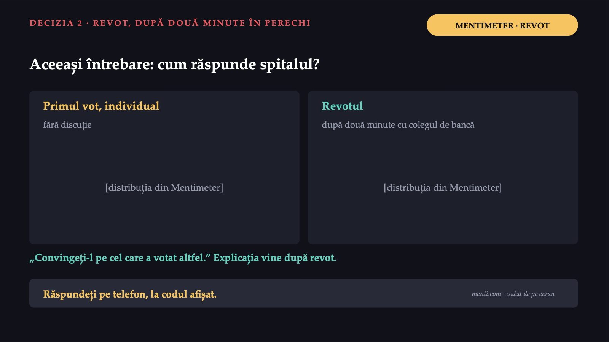
21 / 65Din nou, două minute de discuție în chat. Dacă ați ales altă variantă decât un coleg, încercați să-l convingeți. Gândiți-vă la ce a descoperit analiza: care dintre condițiile acelei nopți ținea de Ioana și care ținea de secție? Apoi revotați pe Mentimeter. Comparăm cele două distribuții, iar explicația vine după revot.
Cine a greșit sau ce a permis greșeala?
 22 / 65
22 / 65Există două feluri de a privi o eroare. Abordarea centrată pe persoană caută cine a greșit și îl pedepsește. Abordarea sistemică pornește de la constatarea că oamenii greșesc și caută condițiile care au făcut eroarea posibilă. OMS spune că majoritatea greșelilor care produc vătămare nu sunt rezultatul practicii unui lucrător sau a unui grup de lucrători, ci al unor eșecuri de sistem sau de proces care îi conduc spre greșeală. Aceeași sursă precizează că abordarea sistemică nu trece cu vederea neglijența sau comportamentul incorect. Pedeapsa aplicată automat are un efect cunoscut: planul global al OMS observă că o cultură a vinei devine nesigură, pentru că oamenii se tem să își recunoască greșelile și le ascund.
Modelul „cașcavalului elvețian”
 23 / 65
23 / 65James Reason a descris slăbiciunile apărărilor unui sistem complex, iar teoria lui este cunoscută drept modelul „cașcavalului elvețian”. Fiecare apărare, fie o procedură, o verificare, o alarmă sau o persoană atentă, este ca o felie de cașcaval cu găuri. Unele găuri vin din erorile active, produse acolo unde omul lucrează direct cu pacientul; altele vin din condițiile latente, adică din defectele de proiectare ale sistemului. Accidentul se produce când găurile mai multor felii se aliniază. Pe Secția B, eroarea activă este administrarea a patruzeci de unități. Condițiile latente existau dinaintea acelei nopți: numărul de pacienți pe asistentă, turele consecutive, depozitarea comună a insulinelor, prescripția de mână, verificarea dublă imposibilă noaptea, predarea pe hol. Întrebarea utilă nu este cine a greșit, ci cum și de ce au cedat apărările.
Cultura echitabilă (just culture)
![TERMENUL NOU 3 DIN 3 NICI ȚAP ISPĂȘITOR, NICI IMPUNITATE Cultura echitabilă (just culture) Eroarea umană scăpare neintenționată, permisă de sistem → Sprijin și îmbunătățirea sistemului Comportamentul cu risc scurtătură conștientă, riscul crezut acceptabil → Îndrumare și revizuirea procedurii Comportamentul nechibzuit ignorarea conștientă a unui risc important → Sancțiune și măsuri corective OMS: majoritatea eșecurilor vin din sisteme slabe; puține situații cer răspundere individuală. TREI TIPURI: SINTEZĂ DIDACTICĂ Sursa principiului: planul global al OMS pentru siguranța pacientului (registru A1136).](diapozitive/C05/024.jpg) 24 / 65
24 / 65Cultura „fără vină” a fost greu de acceptat de public și de presă, pentru că pare să elimine orice răspundere individuală. De aceea s-a impus termenul de cultură echitabilă: ea recunoaște că majoritatea eșecurilor vin din sisteme slabe, dar că există o minoritate de situații în care o persoană trebuie trasă la răspundere, de pildă comportamentul nechibzuit sau abaterea intenționată. Cursul folosește, ca sinteză didactică, trei tipuri de comportament. Eroarea umană este o scăpare neintenționată, permisă de sistem, și cere sprijin pentru persoană și îmbunătățirea sistemului. Comportamentul cu risc este o scurtătură conștientă, făcută cu convingerea că riscul este acceptabil, și cere îndrumare și revizuirea procedurii. Comportamentul nechibzuit, adică ignorarea conștientă a unui risc important, cere sancțiune și măsuri corective.
(a): sprijin pentru Ioana, schimbări în sistem
![RĂSPUNSUL DECIZIA 2 (a): sprijin pentru Ioana, schimbări în sistem Eroare umană, pregătită de sistem: omiterea verificării duble era practica secției. (c) Reproiectează procedura, dar o face pe Ioana autoarea scurtăturii. (b) Pedepsește persoana pentru o condiție latentă; următoarea eroare nu va fi raportată. (d) Cultura echitabilă nu înseamnă lipsă de răspundere. OMS și ANMCS: sprijin pentru „a doua victimă” și pentru cine raportează. Surse: planul global al OMS (registru A1136); OMS, sistemele de raportare (registru A1138, A1152); standardele ANMCS (registru A1143).](diapozitive/C05/025.jpg) 25 / 65
25 / 65Răspunsul la decizia 2 depinde de ce a aflat analiza. Doza greșită a fost o eroare umană, într-un sistem care a pregătit-o. Omiterea verificării duble nu a fost o alegere a Ioanei în acea noapte, ci o practică a secției, devenită normală pentru că nu exista a doua persoană calificată. De aceea varianta (a) este cea mai potrivită. Varianta (c) are partea ei bună, reproiectarea procedurii pentru toată secția, dar o tratează pe Ioana ca și cum ar fi ales singură scurtătura. Varianta (b) pedepsește o condiție latentă în persoana celei care a fost ultima felie; efectul previzibil este că următoarea eroare nu va mai fi raportată. Varianta (d) greșește în altă direcție: cultura echitabilă nu înseamnă lipsă de răspundere. OMS și standardele ANMCS cer sprijin pentru personalul implicat într-un incident grav, numit uneori „a doua victimă”.
18:30
![CONFERINȚA M&M CRONOLOGIA NOPȚII · CAZ CONSTRUIT, VALORI IPOTETICE 18:30 cina: mănâncă puțin 19:30 predarea pe hol, fără cină 21:40 gustare abia atinsă; „40” în loc de 4 22:00–23:20 două internări, o perfuzie 23:30 la tur: confuză, transpirată 23:35 glicemie foarte mică; medicul 23:50 glucoză intravenos 07:30 Ioana spune asistentei-șefe Insulina aspart, injectată la 21:40 21:40 22:40 23:30 00:40 debut: 10–20 de minute efect maxim: 1–3 ore durata: 3–5 ore → 23:30 cade în efectul maxim (calcul pe cazul construit). Sursa ferestrei: RCP NovoRapid (insulină aspart), Agenția Europeană a Medicamentului (EMA), S244 (registru A1161, A1162).](diapozitive/C05/026.jpg) 26 / 65
26 / 65Intrăm în conferința de morbiditate și mortalitate, numită pe scurt M&M. Reconstituim noaptea pas cu pas, fără un vinovat numit dinainte; valorile sunt ipotetice. La 18:30, doamna M. mănâncă puțin la cină. La 19:30, predarea turei se face verbal, pe hol, fără informația despre cină. La 21:40, înaintea gustării de seară Ioana citește „40” și administrează patruzeci de unități de insulină rapidă în loc de patru. La 23:30 o găsește confuză și transpirată, la 23:35 glicemia capilară este foarte mică, iar la 23:50 medicul indică glucoză intravenos. Pentru insulina aspart, rezumatul caracteristicilor produsului arată debutul în 10–20 de minute, efectul maxim între 1 și 3 ore și durata de 3–5 ore. Ora găsirii cade deci în efectul maxim, între 22:40 și 00:40.
Ce a permis eroarea?
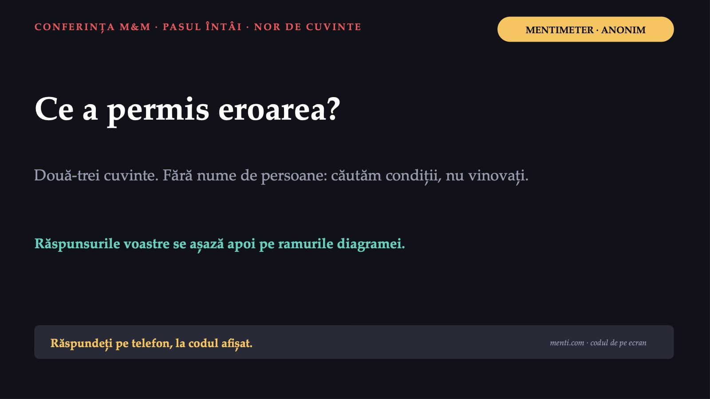
27 / 65Primul pas al conferinței este o întrebare deschisă: ce a permis eroarea? Scrieți pe Mentimeter două sau trei cuvinte. Nu scrieți nume de persoane: căutăm condiții, nu vinovați. Răspunsurile voastre apar ca nor de cuvinte, iar apoi le așezăm pe ramurile diagramei cauză–efect.
Oameni
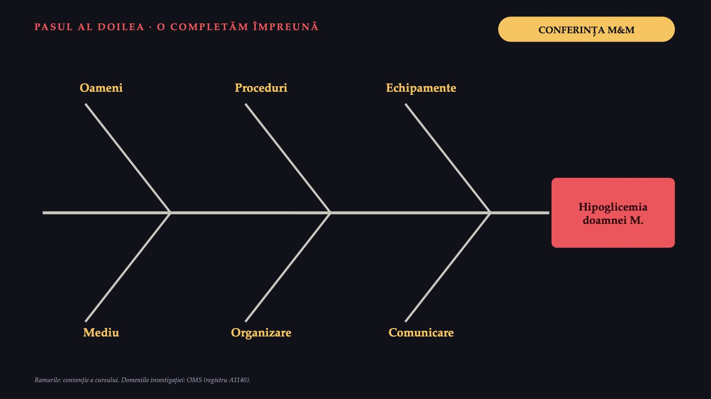
28 / 65Al doilea pas: diagrama cauză–efect, cunoscută și ca diagrama Ishikawa sau „os de pește”. Efectul, hipoglicemia doamnei M., se scrie în „capul peștelui”. Pe ramuri așezăm cauzele posibile: oameni, proceduri, echipamente, mediu, organizare și comunicare. Ramurile sunt o convenție a cursului. Să luăm cuvintele din nor și să vedem pe ce ramură se potrivește fiecare.
Oameni
![CONCLUZIA M&M DIAGRAMA SECȚIEI B · SINTEZĂ DIDACTICĂ Hipoglicemia doamnei M. Oameni oboseala după a treia noapte; o asistentă la douăzeci și patru de pacienți Proceduri verificarea dublă prevăzută, imposibilă noaptea Echipamente cutii aproape identice, pe același raft Mediu internări noi, întreruperi repetate Organizare medicul de gardă pe două secții; planificarea turelor Comunicare indicația de mână, fără unitate; predarea pe hol Ramurile: convenție a cursului; completarea: sinteză didactică pe cazul construit.](diapozitive/C05/029.jpg) 29 / 65
29 / 65Iată cum ar putea arăta diagrama completată pentru Secția B, ca sinteză didactică pe cazul construit. La oameni: oboseala după a treia noapte consecutivă și o singură asistentă la douăzeci și patru de pacienți. La proceduri: verificarea dublă prevăzută, dar imposibil de aplicat noaptea. La echipamente: cutii aproape identice pentru două insuline diferite, pe același raft. La mediu: întreruperile repetate prin internări noi. La organizare: medicul de gardă împărțit între două secții și planificarea turelor. La comunicare: indicația scrisă de mână, fără unitate clară, și predarea pe hol, fără informația despre cină. OMS enumeră, pentru orice investigație, domenii asemănătoare: persoana, echipa, echipamentele, organizația și conducerea ei, autoritatea de reglementare, factorii sociali și culturali. Comparați diagrama cu ce ați propus voi.
De ce nu s-a făcut verificarea dublă?
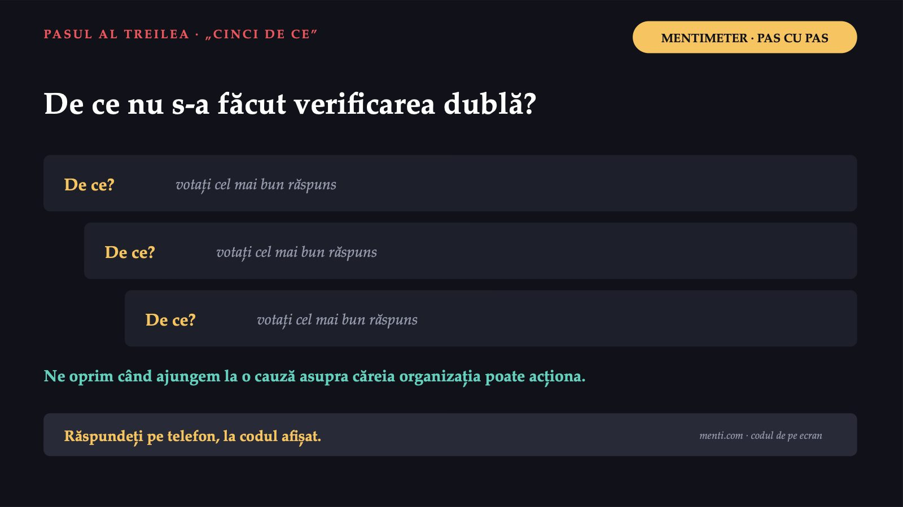
30 / 65Al treilea pas: metoda „cinci de ce”, pe o singură cauză. Întrebarea de pornire este: de ce nu s-a făcut verificarea dublă? La fiecare „de ce”, votați răspunsul care vi se pare cel mai bun. Numărul de cinci este orientativ: ne oprim când ajungem la o cauză asupra căreia organizația poate acționa.
De la „40” la planificarea personalului
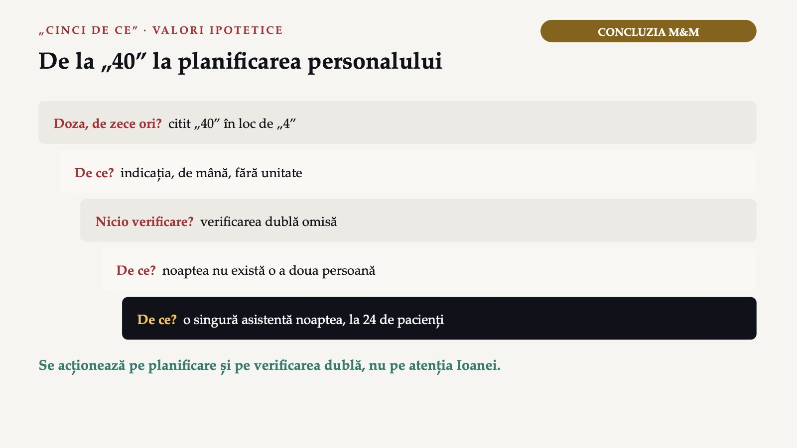
31 / 65Iată lanțul la care se poate ajunge, cu valori ipotetice. De ce a primit doamna M. o doză de zece ori mai mare? Pentru că asistenta a citit „40” în loc de „4”. De ce? Pentru că indicația era scrisă de mână, fără unitate. De ce nu a prins nimeni confuzia? Pentru că verificarea dublă nu s-a făcut. De ce? Pentru că noaptea nu există pe secție o a doua persoană care să o poată face. De ce? Pentru că planificarea personalului prevede o singură asistentă noaptea pentru 24 de pacienți. Cauza asupra căreia se poate acționa este deci planificarea personalului și procedura verificării duble, nu atenția Ioanei. Metoda coboară, astfel, de la o cauză vizibilă la cauza de fond.
O singură măsură de sistem și indicatorul ei
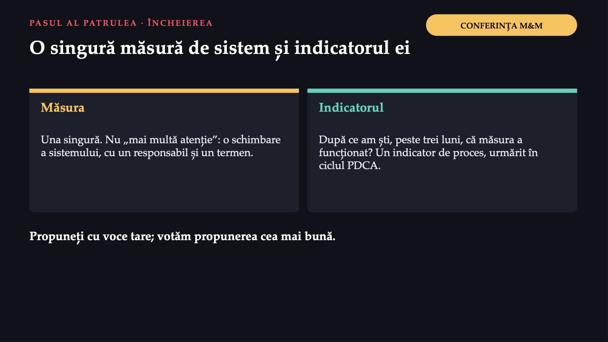
32 / 65Ultimul pas al conferinței. Propuneți în chat o singură măsură de sistem: nu „mai multă atenție”, ci o schimbare a sistemului, cu un responsabil și un termen. Apoi gândiți-vă la indicator: după ce am ști, peste trei luni, că măsura a funcționat? Un indicator de proces, urmărit în ciclul PDCA. Apoi votăm propunerea cea mai bună.
Ce cer standardele ANMCS și OMS
![RISCUL CLINIC Ce cer standardele ANMCS și OMS ANMCS: riscurile clinice sunt identificate, evaluate printr-o metodologie comună și trecute într-un registru unic; măsurile se prioritizează „în funcție de probabilitatea de materializare, severitatea impactului și vulnerabilitatea pacienților”. OMS: procedurile predispuse la risc, acțiuni de reducere, activități pentru căderi, escare și identificarea pacientului. Cinci componente: identificarea proactivă și reactivă, evaluarea, gestionarea, conducerea, cultura. CONVENȚIE A CURSULUI · NU SE EVALUEAZĂ Surse: standardele ANMCS, ediția a III-a (registru A1142); planul global al OMS (registru A1157).](diapozitive/C05/033.jpg) 33 / 65
33 / 65Ce am făcut în conferința M&M ține de managementul riscului clinic. Ca definiție de lucru, el cuprinde activitățile clinice și administrative prin care o unitate sanitară identifică, evaluează și reduce riscul de vătămare a pacienților, a personalului și a vizitatorilor, precum și riscul de pierdere pentru organizație. Standardele ANMCS cer ca riscurile clinice să fie identificate, evaluate printr-o metodologie comună și integrate într-un registru unic al riscurilor, iar măsurile să fie prioritizate în funcție de probabilitatea de materializare, severitatea impactului și vulnerabilitatea pacienților. Planul global al OMS cere identificarea procedurilor predispuse la risc, acțiuni de reducere a riscului și activități pentru căderi, escare și identificarea pacientului. Cele cinci componente de pe diapozitiv sunt o convenție a cursului și nu se evaluează.
Cât de probabil? Cât de grav?
![MATRICEA DE RISC Cât de probabil? Cât de grav? Cele două axe Probabilitatea și gravitatea: criteriile după care ANMCS cere prioritizarea riscurilor clinice. Scorul și culorile Produsul celor două note; de la verde (acceptabil) la roșu (urgent). Resursele merg întâi spre zona roșie. scorul riscului = probabilitatea × gravitatea Scorul ordonează riscurile, nu le măsoară. PRODUSUL ȘI CULORILE: CONVENȚIE A CURSULUI · NU SE EVALUEAZĂ Sursa axelor: standardele ANMCS, ediția a III-a (registru A1142). Ordonarea: formulare didactică.](diapozitive/C05/034.jpg) 34 / 65
34 / 65Matricea de risc combină două întrebări: cât de probabil este ca riscul să se producă și cât de grave ar fi urmările. Sunt chiar criteriile după care standardele ANMCS cer prioritizarea riscurilor clinice. Fiecare se notează pe o scală, de obicei de la unu la cinci, iar scorul riscului este produsul celor două note. Matricea se colorează pe niveluri: verde pentru riscul acceptabil, galben pentru riscul urmărit, portocaliu pentru riscul care cere acțiune și roșu pentru riscul urgent. Resursele se alocă întâi riscurilor din zona roșie. Rețineți însă un lucru: scorul ordonează riscurile, nu le măsoară. Produsul și culorile sunt o convenție a cursului și nu se evaluează.
Care risc trece primul pe lista de măsuri? De ce?
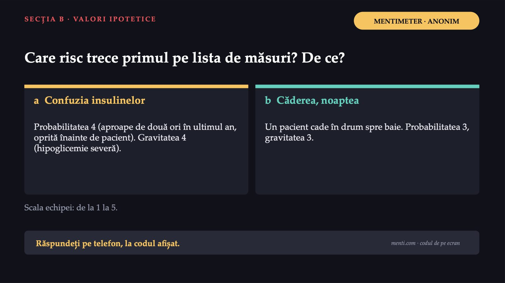
35 / 65Să aplicăm matricea pe Secția B, cu valori ipotetice, pe o scală de la 1 la 5. Primul risc este confuzia insulinelor: probabilitatea 4, gravitatea 4. Al doilea este căderea unui pacient noaptea, în drum spre baie: probabilitatea 3, gravitatea 3. Votați pe Mentimeter: care risc trece primul pe lista de măsuri și de ce?
Confuzia insulinelor trece prima
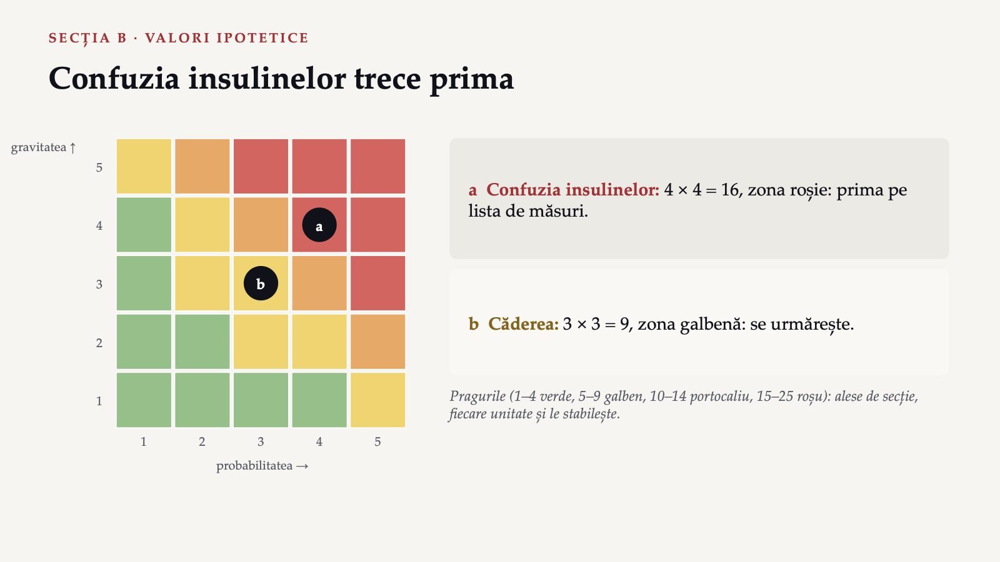
36 / 65Confuzia insulinelor are scorul 4 × 4 = 16 și cade în zona roșie, deci trece prima pe lista de măsuri. Căderea are scorul 3 × 3 = 9, în zona galbenă, și se urmărește. Pragurile folosite aici sunt alese de această secție: 1–4 verde, 5–9 galben, 10–14 portocaliu, 15–25 roșu. Ele sunt o convenție a exemplului; fiecare unitate și le stabilește în metodologia ei. Observați că ordinea vine din combinația celor două note, nu dintr-o măsurare exactă a riscului. După ce știm ce risc trece primul, întrebarea următoare este ce facem cu el.
Patru feluri de a trata un risc
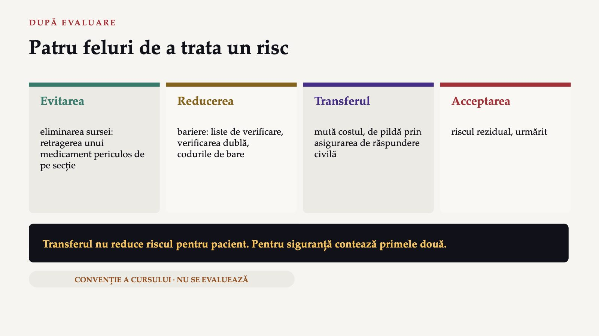
37 / 65Odată evaluat, un risc poate fi tratat în patru feluri; enumerarea este o convenție a cursului și nu se evaluează. Evitarea înseamnă eliminarea sursei riscului: retragerea unui medicament periculos de pe secție sau interzicerea unor abrevieri în prescripții. Reducerea pune bariere de siguranță: liste de verificare, verificarea dublă, codurile de bare, prescrierea electronică. Transferul trece consecințele financiare asupra altcuiva, de pildă prin asigurarea de răspundere civilă profesională. Acceptarea privește riscul rezidual, care nu poate fi eliminat și se urmărește, cum este riscul inerent al anesteziei, redus prin protocoale. Transferul nu reduce riscul pentru pacient; mută numai costul. De aceea, în îngrijire, pentru siguranță contează primele două strategii.
FMEA și analiza cauzei rădăcină
![ÎNAINTE SAU DUPĂ INCIDENT FMEA și analiza cauzei rădăcină FMEA (proactivă) Analiza cauzei rădăcină (reactivă) Când înainte de incident, pe proces după un incident raportat Ce întreabă ce poate merge prost la fiecare pas? ce a contribuit la incident? Rezultatul procesul schimbat înaintea evenimentului advers un plan de acțiuni corective FMEA aplicată integral: greu de pus în practică, validitate discutabilă; ajută însă echipa să înțeleagă procesul. Sursa rândurilor „Când”, „Ce întreabă”, „Rezultatul” și a limitei: registru A1154.](diapozitive/C05/038.jpg) 38 / 65
38 / 65Riscurile se pot căuta înainte să producă un incident sau după ce l-au produs. Analiza modurilor de defectare și a efectelor lor, în engleză Failure Mode and Effects Analysis (FMEA), este analiza proactivă: echipa ia un proces pas cu pas, de pildă administrarea medicamentelor, și întreabă la fiecare pas ce poate merge prost, înaintea unui eveniment advers. Analiza cauzei rădăcină este analiza reactivă: privește incidentele deja produse și raportate, caută erorile latente din spatele lor și se încheie cu un plan de acțiuni corective. FMEA aplicată integral a fost considerată greu de pus în practică, cu rezultate a căror validitate nu este neechivocă, dar poate ajuta o echipă multidisciplinară să înțeleagă un proces de îngrijire. Pe Secția B, FMEA ar analiza circuitul insulinei, iar analiza cauzei rădăcină, hipoglicemia doamnei M.
„De ce?”, de mai multe ori, și limitele analizei
![DUPĂ OMS „De ce?”, de mai multe ori, și limitele analizei Proces sistematic: se reconstituie evenimentele și se întreabă repetat „de ce?” până la cauzele de fond. 1 graba de a încheia 2 pregătirea insuficientă a analiștilor 3 lipsa specialiștilor în îngrijire și factori umani 4 lipsa de independență: adevărurile incomode Pentru curioși: FMEA notează gravitatea, probabilitatea și detectabilitatea fiecărui mod de defectare (exemplu construit, convenție; nu se evaluează). Sursa: OMS (registru A1137, A1140).](diapozitive/C05/039.jpg) 39 / 65
39 / 65OMS definește analiza cauzei rădăcină ca un proces sistematic și repetat prin care se identifică factorii care au contribuit la un incident, reconstituind succesiunea evenimentelor și întrebând de mai multe ori „de ce?”, până la cauzele de fond. Ea este considerată standardul investigației în îngrijirile de sănătate, dar are limite pe care OMS le numește. Prima este presiunea de a încheia repede analiza. A doua, lipsa de pregătire a celor care o fac. A treia, lipsa specialiștilor în domeniul îngrijirii și în factorii umani. A patra, lipsa de independență, când oamenii evită să descopere adevăruri incomode. Pentru curioși: FMEA ierarhizează fiecare mod de defectare după gravitate, probabilitate și detectabilitate, dar scalele ei sunt o convenție a cursului și nu se evaluează.
Planul de acțiuni corective al Secției B
![ACTUL AL TREILEA · DEZNODĂMÂNTUL CE S-A ÎNTÂMPLAT DE FAPT · CAZ CONSTRUIT Planul de acțiuni corective al Secției B 1 Verificare dublă obligatorie la medicamentele cu risc mare; noaptea, o a doua persoană 2 Insulinele separate, cu etichete colorate diferit 3 Prescrierea electronică, cu oprirea dozelor neobișnuite 4 Mai puține nopți consecutive; predare structurată, la patul pacientului 5 Instruire în raportarea fără pedeapsă; informarea lunară a secției Sinteză didactică după decul cursului; predarea nestructurată ca condiție latentă: registru A1153.](diapozitive/C05/040.jpg) 40 / 65
40 / 65Actul al treilea: ce a schimbat Spitalul A. Analiza Secției B s-a încheiat cu un plan de acțiuni corective, fiecare cu un responsabil și un termen; planul este construit pentru curs. Verificarea dublă independentă devine obligatorie pentru medicamentele cu risc mare, ca insulina, anticoagulantele, opioidele și clorura de potasiu concentrată, iar planificarea asigură noaptea o a doua persoană. Insulinele se depozitează separat, cu etichete de culori diferite. Indicațiile nu se mai scriu de mână, iar prescrierea electronică oprește dozele aflate în afara intervalului obișnuit. Planificarea turelor limitează nopțile consecutive, iar predarea se face la patul pacientului, după un model structurat; lipsa unei predări structurate este chiar exemplul de condiție latentă din literatura despre modelul lui Reason. În sfârșit, personalul primește instruire despre raportarea fără pedeapsă, iar secția, informații lunare despre ce s-a schimbat.
Spitalul nu a sancționat-o pe Ioana
![CONCLUZIA M&M COMPARAȚI CU VOTUL Spitalul nu a sancționat-o pe Ioana Sprijin pentru ea și un sistem schimbat: varianta (a) a deciziei 2. În cultura vinei, greșelile se ascund. Indicatorul ales Proporția administrărilor de insulină cu verificare dublă documentată, urmărită în ciclul PDCA. Raportarea care învață ANMCS cere pentru orice îmbunătățire obiective, valori inițiale și măsurarea schimbării. Rămâne întrebarea: mai vrea Ioana să lucreze acolo? Surse: planul global al OMS (registru A1136); OMS, sistemele de raportare (registru A1138); standardele ANMCS (registru A1066).](diapozitive/C05/041.jpg) 41 / 65
41 / 65Comparați acum votul vostru cu ce a decis spitalul. Spitalul nu a sancționat-o pe Ioana; i-a oferit sprijin și a schimbat sistemul, ca în varianta (a) a deciziei 2. O sancțiune ar fi transmis secției că greșeala recunoscută se pedepsește, iar planul global al OMS observă că, într-o cultură a vinei, oamenii își ascund greșelile. Ca să știe dacă măsurile funcționează, secția urmărește un indicator de proces în ciclul PDCA: proporția administrărilor de insulină cu verificare dublă documentată. Standardele ANMCS cer, pentru orice intervenție de îmbunătățire, obiective, valori inițiale și măsuri care permit evaluarea schimbării. Raportarea trebuie să producă învățare, nu doar să comunice eșecuri. Rămâne însă o întrebare pe care nicio procedură nu o rezolvă: mai vrea Ioana să lucreze acolo?
Chirurgie: o asistentă ia din sertar „ser fiziologic” și observă, înainte de administrare, că e clorură de potasiu concentrată. Ce face?
![MENTIMETER · ANONIM DECIZIA 3 · ALTĂ SECȚIE, ACELEAȘI PRINCIPII · FĂRĂ REVOT Chirurgie: o asistentă ia din sertar „ser fiziologic” și observă, înainte de administrare, că e clorură de potasiu concentrată. Ce face? a Mută fiola și nu mai spune nimic: niciun pacient nu a fost vătămat b Mută fiola, raportează incidentul în sistemul intern și propune depozitarea separată a electroliților concentrați c Îi spune doar colegei de tură să fie atentă d Așteaptă următorul audit intern, ca problema să fie găsită acolo Răspundeți pe telefon, la codul afișat. menti.com · codul de pe ecran](diapozitive/C05/042.jpg) 42 / 65
42 / 65A treia decizie aplică aceleași principii pe o altă secție a spitalului, cea de chirurgie. O asistentă ia din sertar, pentru o diluție, ceea ce crede că este o fiolă de ser fiziologic și observă, înainte de administrare, că este clorură de potasiu concentrată. Nu s-a întâmplat nimic. Ce face? De data aceasta votați pe Mentimeter o singură dată, fără revot.
(b): raportați și schimbați regula
 43 / 65
43 / 65Varianta potrivită este (b): mută fiola, raportează incidentul în sistemul intern al spitalului și propune depozitarea separată a electroliților concentrați. Situația este un incident care nu a ajuns la pacient: eroarea s-a produs, fiola a fost luată, dar a fost oprită înainte de administrare. Dacă fiola ar fi fost observată în sertar, înainte să fie luată, ar fi fost un pericol, ca în primul vot. Standardele ANMCS cer raportarea și analiza acestor incidente, nu numai a evenimentelor adverse. Mutarea fiolei rezolvă problema pentru o noapte; raportarea permite secției să schimbe regula de depozitare, adică să aplice o strategie de reducere sau chiar de evitare a riscului. Variantele (a) și (c) lasă gaura din felia de cașcaval deschisă pentru tura următoare, iar (d) amână învățarea până la o verificare care poate să nu privească acel sertar.
Raportarea servește învățării
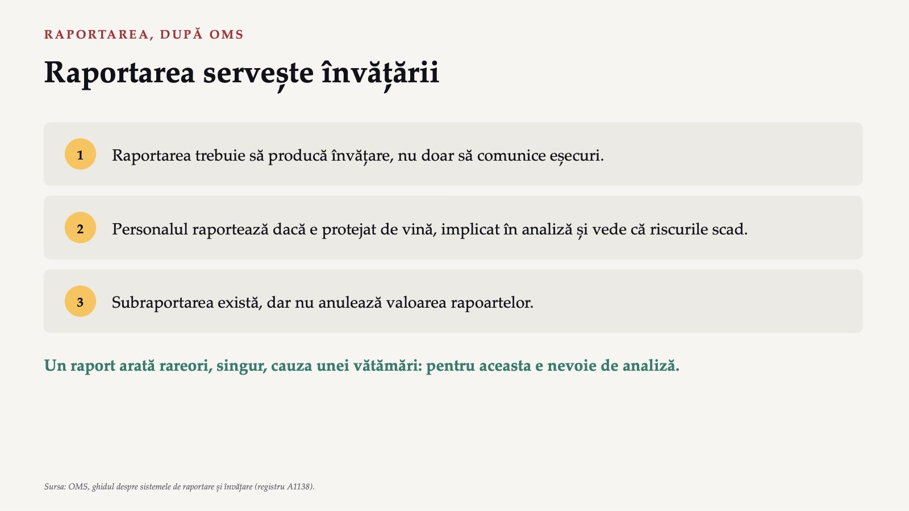
44 / 65De ce raportăm? OMS rezumă rostul sistemelor de raportare în zece constatări; primele trei ne privesc direct. Prima: raportarea trebuie să producă învățare pentru îmbunătățirea siguranței, nu doar să comunice eșecuri. A doua: personalul raportează incidentele dacă este protejat de vină și de represalii, este implicat în analiza care urmează și vede că riscurile pentru pacienți scad. A treia: subraportarea există, în sănătate și în alte sectoare, dar nu anulează valoarea rapoartelor, care arată sistemul din perspectiva celor implicați sau a martorilor. OMS mai precizează că un raport arată rareori, singur, cauza unei vătămări: pentru aceasta este nevoie de investigație și analiză. Să vedem ce cer legea și standardele în România.
Ce cer legea și standardele
![ÎN ROMÂNIA Ce cer legea și standardele Legea nr. 185/2017 îi cere ANMCS „să elaboreze o metodologie de identificare, analiză și raportare a evenimentelor adverse asociate asistenței medicale, fără caracter acuzator” (art. 5 alin. (2) lit. b)). Raportarea Unitatea raportează și analizează evenimentele adverse și incidentele care nu au ajuns la pacient. Identificarea Cel puțin doi identificatori independenți înaintea tratamentului, recoltării, transfuziei. Surse: Legea nr. 185/2017 (registru A1141); standardele ANMCS, ediția a III-a (registru A1070, A1065).](diapozitive/C05/045.jpg) 45 / 65
45 / 65În România, Legea nr. 185/2017 îi cere ANMCS să elaboreze o metodologie de identificare, analiză și raportare a evenimentelor adverse asociate asistenței medicale, fără caracter acuzator, și să gestioneze sistemul de raportare la nivel național. Standardele ANMCS cer apoi două lucruri care ne privesc direct. Primul: unitatea raportează și analizează evenimentele adverse și incidentele care nu au ajuns la pacient. Al doilea: pacientul este identificat prin cel puțin doi identificatori independenți înaintea tratamentului, a recoltării, a transfuziei și a altor acțiuni cu risc de confuzie. Termenele și formularul național de raportare nu sunt descrise în notele cursului; acolo raportarea apare numai în sistemul intern al spitalului, după procedura lui.
70,0%
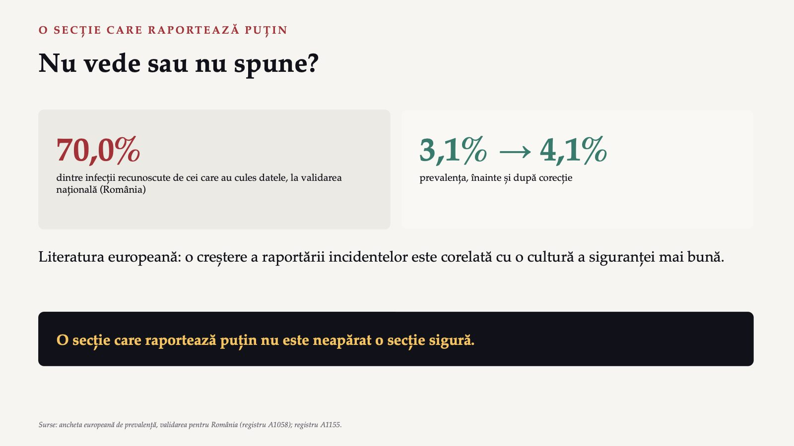
46 / 65Subraportarea are o consecință pe care o puteți vedea chiar în datele despre infecțiile asociate asistenței medicale. În ancheta europeană de prevalență, validarea națională a arătat pentru România că cei care au cules datele au recunoscut 70,0% dintre infecții, iar prevalența a crescut de la 3,1% în ancheta inițială la 4,1% după corecție. O secție care raportează puțin nu este, deci, neapărat o secție sigură; poate fi o secție care nu vede sau nu spune. Literatura europeană despre calitate arată, de altfel, că o creștere a raportării incidentelor este corelată cu o cultură a siguranței mai bună. Un număr mic de rapoarte nu este un motiv de liniște, ci o întrebare.
Ce faceți și ce vă oprește
![RAPORTAREA Ce faceți și ce vă oprește Rolul în raportare Recunoaște devreme incidentul; completează fișa cu faptele, fără judecăți despre persoane; participă la analiză; aplică acțiunile decise. Barierele și răspunsul Frica de sancțiuni, lipsa unui răspuns, formularele complicate. Răspuns: cultura echitabilă, informarea despre ce s-a schimbat, protecția celui care raportează. ANMCS cere protecție legală și sprijin psihologic. ROLURI ȘI BARIERE: SINTEZĂ DIDACTICĂ Sursa cerinței: standardele ANMCS, ediția a III-a (registru A1143).](diapozitive/C05/047.jpg) 47 / 65
47 / 65Ce faceți voi, concret, în raportare? Asistentul medical recunoaște devreme evenimentul sau incidentul care nu a ajuns la pacient, completează fișa de raportare cu faptele, fără judecăți despre persoane, participă la analiza cauzelor când i se cere și aplică acțiunile corective decise. Raportarea este o obligație profesională, nu o denunțare a colegilor. Barierele cunoscute sunt frica de sancțiuni și de urmări juridice, lipsa unui răspuns după raportare, formularele complicate, lipsa timpului și cultura vinei. Soluțiile le răspund punct cu punct: cultura echitabilă, informarea personalului despre ce s-a schimbat, formulare scurte, instruirea, protecția celui care raportează. Protecția legală și sprijinul psihologic sunt, în România, cerințe ale standardelor ANMCS. Rolurile și barierele sunt o sinteză didactică.
„Felul în care facem lucrurile aici”
 48 / 65
48 / 65Planul global al OMS amintește o definiție informală a culturii: „felul în care facem lucrurile aici”, la care se adaugă uneori „când nu se uită nimeni”. Cultura siguranței este, deci, felul în care o organizație se poartă în privința siguranței și atunci când nu o verifică nimeni. OMS consideră indispensabile angajamentul conducerii, transparența, comunicarea deschisă și respectuoasă, învățarea din erori și din practicile bune și un echilibru judicios între politica fără vină și răspundere. O cultură puternică a siguranței oferă personalului și un mediu sigur psihologic, în care problemele pot fi semnalate fără teama de urmări negative. Standardele ANMCS cer evaluarea periodică a culturii siguranței pacientului în rândul personalului.
7
 49 / 65
49 / 65În mai 2019, a 72-a Adunare Mondială a Sănătății a adoptat o rezoluție privind acțiunea globală pentru siguranța pacientului și a instituit Ziua mondială a siguranței pacientului, pe 17 septembrie. Din rezoluție a rezultat planul global de acțiune pentru siguranța pacientului 2021–2030, cu 7 obiective strategice și 35 de strategii, câte 5 pentru fiecare obiectiv. Primul obiectiv face din vătămarea evitabilă zero un mod de gândire și o regulă de lucru. Al cincilea obiectiv cere inspirarea, educarea, pregătirea și protejarea fiecărui lucrător din sănătate, ca să contribuie la sisteme de îngrijire sigure. Aici se leagă cele două părți ale cursului: siguranța pacientului depinde și de siguranța, pregătirea și protecția celor care îl îngrijesc. Cu asta încheiem prima parte.
2
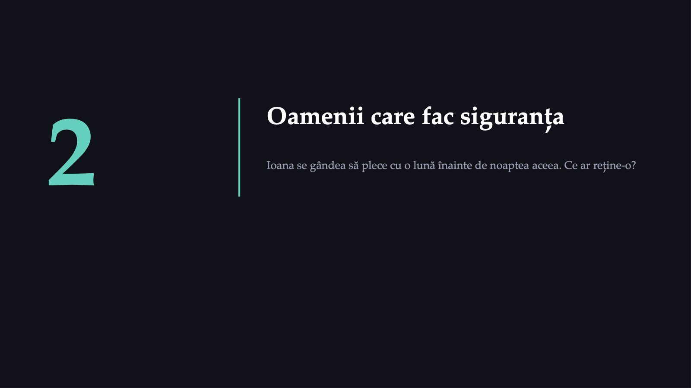
50 / 65Partea a doua pornește de la întrebarea rămasă deschisă. Cu o lună înainte de noaptea aceea, Ioana se gândea să plece din spital. Ce ar reține-o? Pentru a răspunde, privim resursele umane ca pe o condiție a siguranței: planificarea, păstrarea, motivarea și epuizarea profesională.
+7%
![RESURSELE UMANE ȘI SIGURANȚA Un pacient în plus pe asistent OMS: personalul insuficient, oboseala și epuizarea contribuie la vătămarea pacienților. +7% șansele de deces la 30 de zile, la fiecare pacient în plus pe asistent (pacienți operați) 9,6% scăderea medie a șanselor de deces, la o tură suplimentară de 12 ore a unui asistent licențiat Studii observaționale: o asociere puternică, nu dovada că exact acest efect ar urma. Surse: OMS (registru A1130); Aiken și colab. (registru A910); studiul publicat în 2023 (registru A931).](diapozitive/C05/051.jpg) 51 / 65
51 / 65OMS enumeră, printre factorii care duc la vătămarea pacienților, personalul insuficient, oboseala și epuizarea profesională. Legătura a fost măsurată în studii mari. Într-un studiu observațional în 300 de spitale din nouă țări europene, fiecare pacient în plus pe asistent medical a fost asociat, la pacienții operați de 50 de ani și peste, cu o creștere de 7% a șanselor de deces în spital în primele 30 de zile de la internare. Într-un studiu retrospectiv publicat în 2023, pe datele din 2017 ale unui grup de trei spitale englezești, o tură suplimentară de 12 ore a unui asistent medical licențiat a fost asociată cu o scădere medie de 9,6% a șanselor de deces. Ambele studii sunt observaționale: arată o asociere puternică și constantă, dar nu demonstrează singure că schimbarea numărului de asistenți ar produce exact aceste efecte.
Unde sunt asistenții medicali
![O PROBLEMĂ MONDIALĂ ȘI ROMÂNEASCĂ Unde sunt asistenții medicali 5,8 milioane deficitul mondial, 2023; 4,1 milioane în 2030 772 față de 784 la 100 000 de locuitori, România și media UE, 2023 190 420 au migrat, 2023 (123 404 în 2013) Salariile aproape triplate (2017 într-un loc, 2018 în altul) și angajările din pandemie au crescut personalul; deficitul persistă, mai ales la medici. Migrația: sursa nu spune dacă e cumulată. Surse: OMS, starea nursingului în lume (registru A1150, A1151); analiza sistemului de sănătate din România, 2026 (registru A1144, A1145, A1146).](diapozitive/C05/052.jpg) 52 / 65
52 / 65Lipsa de personal este o problemă mondială. Raportul OMS despre starea nursingului în lume estimează 29,8 milioane de asistenți medicali în 2023 și un deficit de 5,8 milioane, care ar urma să scadă la 4,1 milioane în 2030. În România, analiza sistemului de sănătate publicată în 2026 arată 772 de asistenți medicali în activitate la 100 000 de locuitori în 2023, sub media Uniunii Europene, de 784. Numărul asistenților medicali care au migrat a crescut de la 123 404 în 2013 la 190 420 în 2023, mai ales spre Italia și Regatul Unit; sursa nu precizează dacă cifra este cumulată, așa că o citim ca indicator al tendinței. Aceeași analiză leagă creșterea personalului de majorarea salarială de aproape trei ori și de angajările din pandemie, dar constată că deficitul persistă, mai ales la medici.
Planificați, atrageți, păstrați
 53 / 65
53 / 65Managementul resurselor umane urmărește omul de la nevoia de a-l angaja până la decizia lui de a rămâne. Raportul OMS din 2025 despre nursing cere țărilor să planifice personalul de nursing după piața muncii și să atragă, să recruteze și să păstreze asistenții prin politici bazate pe dovezi, adaptate contextului; țărilor europene le recomandă accentul pe formare și pe păstrarea personalului. Cursul detaliază drumul în șapte etape: planificarea necesarului, recrutarea, selecția, integrarea noului angajat, dezvoltarea profesională, evaluarea performanței și păstrarea. Ciclul este o convenție a cursului și nu se evaluează. Planificarea este etapa care se vede cel mai direct în siguranța pacientului: pe Secția B, metoda „cinci de ce” a ajuns chiar la planificarea unei singure asistente noaptea.
Ca omul să crească și să rămână
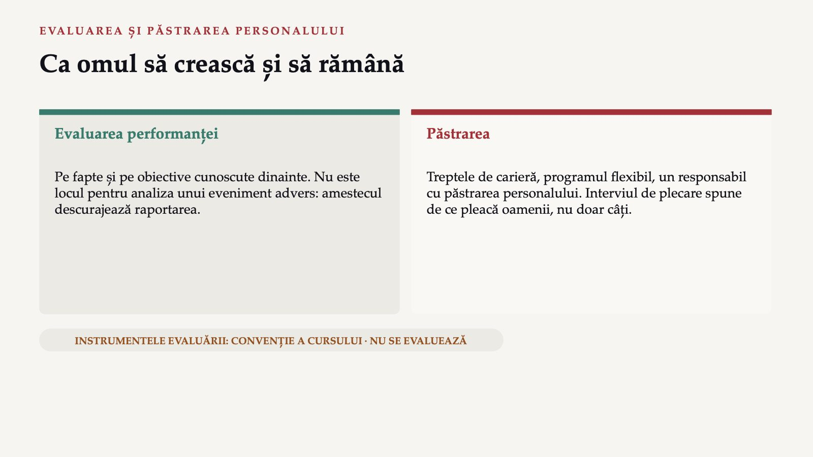
54 / 65Evaluarea performanței se face pe fapte și pe obiective cunoscute dinainte, cu scopul de a ajuta omul să crească, nu de a-l eticheta. Ea nu este locul pentru analiza unui eveniment advers: amestecarea celor două transformă raportarea într-un risc pentru propria evaluare și o descurajează. Păstrarea oamenilor buni contează cel puțin cât recrutarea lor. Strategiile prezentate de curs sunt treptele de carieră, de la asistent la asistent specialist, coordonator, asistent-șef și director de îngrijiri, programul flexibil, varietatea sarcinilor și un responsabil cu păstrarea personalului. Interviul de plecare este o sursă de informații folosită rar: el spune de ce pleacă oamenii, nu doar câți pleacă. Instrumentele evaluării sunt o convenție a cursului și nu se evaluează.
De ce muncesc oamenii bine și de ce pleacă
![TREI TEORII ALE MOTIVĂRII, DUPĂ OPENSTAX De ce muncesc oamenii bine și de ce pleacă Maslow Întâi nevoile de bază (fiziologice, siguranța), apoi cele sociale, stima, iar la vârf autorealizarea. Herzberg Factorii de igienă (salariul, condițiile) previn nemulțumirea. Factorii motivatori (recunoașterea, responsabilitatea, creșterea profesională) motivează. Autodeterminarea Motivația intrinsecă vine din trei nevoi: competența, autonomia, relaționarea. Anii și autorii teoriilor nu se evaluează. Sursa: OpenStax (registru A1147, A1148, A1149).](diapozitive/C05/055.jpg) 55 / 65
55 / 65Trei teorii explică de ce oamenii muncesc bine și de ce pleacă; le prezentăm după manualul OpenStax. Abraham Maslow a propus o ierarhie a nevoilor: întâi nevoile de bază, fiziologice și de siguranță, apoi cele sociale, apoi stima, iar la vârf autorealizarea, care nu se satisface niciodată complet. Frederick Herzberg a împărțit factorii în două grupuri: factorii de igienă, ca salariul și condițiile de lucru, previn nemulțumirea, dar nu produc singuri motivare; factorii motivatori, ca recunoașterea, responsabilitatea și creșterea profesională, produc satisfacție și motivează. Teoria autodeterminării spune că motivația intrinsecă vine din trei nevoi: competența, autonomia și relaționarea; recompensele exterioare o pot chiar reduce. Anii și autorii teoriilor nu se evaluează.
Ioana se gândește să plece. Ce ar reține-o cel mai probabil?
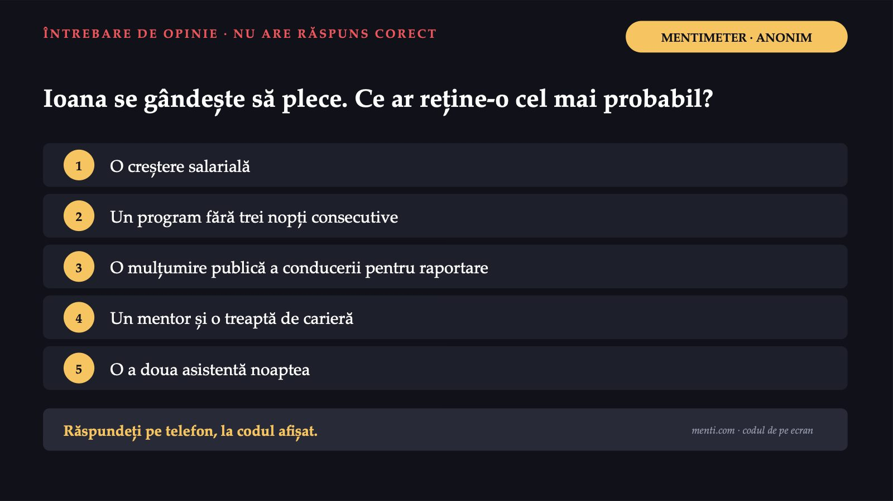
56 / 65Să ne întoarcem la Ioana. Din cele cinci măsuri de pe ecran, alegeți-o pe Mentimeter pe cea care credeți că ar reține-o cel mai probabil: o creștere salarială, un program fără trei nopți consecutive, o mulțumire publică, un mentor cu o treaptă de carieră sau a doua asistentă noaptea. Este o întrebare de opinie: nu există o variantă bună sau greșită.
Fiecare măsură: factor de igienă sau factor motivator?
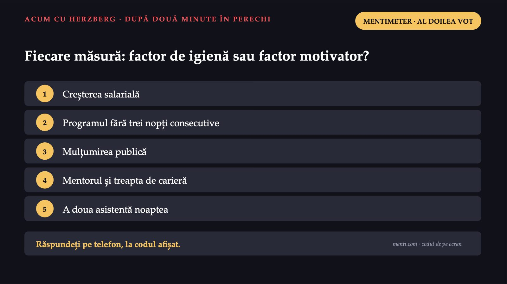
57 / 65Acum aceleași cinci măsuri, privite prin teoria lui Herzberg. Discutați două minute în chat, apoi votați pe Mentimeter pentru fiecare măsură: ține de contextul muncii, deci este un factor de igienă, sau ține de conținutul muncii, deci este un factor motivator?
Contextul muncii și conținutul ei
![RĂSPUNSUL CLASIFICAREA, DUPĂ HERZBERG Contextul muncii și conținutul ei Factori de igienă Creșterea salarială, programul fără trei nopți consecutive, a doua asistentă noaptea: contextul muncii. Pot opri nemulțumirea. Factori motivatori Mulțumirea publică (recunoașterea), mentorul și treapta de carieră (responsabilitatea, creșterea profesională): conținutul muncii. O creștere salarială poate opri plecarea, dar nu o face, singură, pe Ioana să își dorească să rămână. Sursa: OpenStax (registru A1148); consecința practică: formulare didactică.](diapozitive/C05/058.jpg) 58 / 65
58 / 65Clasificarea, după Herzberg. Creșterea salarială, programul fără trei nopți consecutive și a doua asistentă noaptea țin de contextul muncii, adică de salariu și de condițiile de lucru: sunt factori de igienă și pot opri nemulțumirea. Mulțumirea publică, adică recunoașterea, și mentorul cu treapta de carieră, adică responsabilitatea și creșterea profesională, țin de conținutul muncii: sunt factori motivatori. Consecința practică este că o creștere salarială poate opri plecarea unei asistente nemulțumite, dar nu o face, singură, să își dorească să rămână. Pentru aceasta este nevoie și de recunoaștere și de o muncă în care să se simtă utilă. Comparați clasificarea cu prima voastră alegere.
Sindromul de epuizare profesională
![CLASIFICAREA INTERNAȚIONALĂ A BOLILOR (ICD-11) Sindromul de epuizare profesională Rezultatul stresului cronic la locul de muncă, gestionat fără succes. Fenomen ocupațional, nu boală. Epuizarea energiei „Nu mai am nimic de dat.” Oboseală cronică, insomnie. Distanțarea, cinismul „Încă un număr de pat.” Pierderea empatiei. Eficacitate scăzută „Oricum nu contează.” Pierderea sensului, intenția de a pleca. Risc maxim: cerințe mari, control mic, sprijin slab (sinteză didactică). Sursa: OMS, ICD-11 (registru A894); cuvintele asistenților: sinteză didactică după decul cursului.](diapozitive/C05/059.jpg) 59 / 65
59 / 65Clasificarea internațională a bolilor, revizia a 11-a (ICD-11), descrie sindromul de epuizare profesională ca rezultatul stresului cronic la locul de muncă, gestionat fără succes. Are trei dimensiuni: sentimentul de epuizare a energiei, distanțarea mentală de muncă sau cinismul față de ea și scăderea eficacității profesionale. Se referă numai la contextul profesional și este clasificat ca fenomen ocupațional, nu ca boală. Cu cuvintele asistenților, ca sinteză didactică: „nu mai am nimic de dat” pentru epuizare, „încă un număr de pat” pentru distanțare și „oricum nu contează” pentru eficacitatea scăzută, cu intenția de a părăsi profesia. Un model clasic al stresului ocupațional spune că riscul cel mai mare apare când cerințele muncii sunt mari, controlul asupra ei este mic și sprijinul este slab.
La Ioana, trei factori sunt evidenți
![FACTORII DE RISC ȘI CONSECINȚELE La Ioana, trei factori sunt evidenți 1 volumul de muncă: o asistentă la douăzeci și patru de pacienți 2 nopțile consecutive 3 după eveniment, încărcătura emoțională a erorii OMS, 2025: stresul și epuizarea scad siguranța pacientului, calitatea îngrijirilor și păstrarea asistenților; violența la locul de muncă e printre riscurile profesiei. CELE CINCI CATEGORII DE FACTORI DE RISC: CONVENȚIE A CURSULUI Surse: OMS (registru A1130); OMS, raportul din 2025 despre nursing (registru A1159).](diapozitive/C05/060.jpg) 60 / 65
60 / 65Cursul grupează factorii de risc ai epuizării în cinci categorii, ca o convenție: volumul excesiv de muncă, turele de noapte și programul, suferința morală, violența la locul de muncă și expunerea repetată la suferință și moarte. În cazul Ioanei, trei dintre ei sunt evidenți: volumul de muncă, cu o asistentă la douăzeci și patru de pacienți, nopțile consecutive și, după eveniment, încărcătura emoțională a erorii. Consecințele se văd la pacient, la profesionist și la organizație. OMS trece oboseala și epuizarea printre factorii care duc la vătămarea pacienților, iar raportul OMS din 2025 despre nursing adaugă că stresul și epuizarea scad siguranța pacientului, calitatea îngrijirilor și păstrarea asistenților; același raport numără violența la locul de muncă printre riscurile profesiei.
Ce cer OMS, legea și standardele
![PREVENIREA EPUIZĂRII PROFESIONALE Ce cer OMS, legea și standardele 1 OMS: ture, ore și pauze adecvate, mai puțină birocrație, sprijin pentru sănătatea mintală. 2 Legea nr. 319/2006: angajatorul asigură securitatea și sănătatea lucrătorilor (art. 6 alin. (1)). 3 ANMCS: evaluarea anuală a calității vieții profesionale; sprijin psihologic după evenimentele adverse severe. Trei niveluri: individual, echipă, organizație. Fără schimbări organizaționale, măsurile individuale nu țin. TREI NIVELURI: CONVENȚIE · NU SE EVALUEAZĂ Surse: planul global al OMS (registru A1160); Legea nr. 319/2006 (registru A890); standardele ANMCS (registru A1036, A1143).](diapozitive/C05/061.jpg) 61 / 65
61 / 65Prevenirea are temeiuri precise. Planul global al OMS cere unităților sanitare durate ale turelor, ore de lucru și pauze adecvate și o sarcină administrativă redusă, iar guvernelor, acces pentru lucrători la servicii de sănătate mintală și de sprijin social. Legea nr. 319/2006 obligă angajatorul să asigure securitatea și sănătatea lucrătorilor în toate aspectele legate de muncă, la articolul 6 alineatul (1), iar lucrătorul are și el obligații de securitate. Standardele ANMCS cer evaluarea anuală a calității vieții profesionale și sprijin psihologic după evenimentele adverse severe și după violență. Cursul împarte prevenirea pe trei niveluri, individual, al echipei și al organizației; împărțirea este o convenție și nu se evaluează. Ideea ei este simplă: măsurile individuale nu țin dacă organizația nu schimbă și condițiile.
Luni dimineață, în stagiu
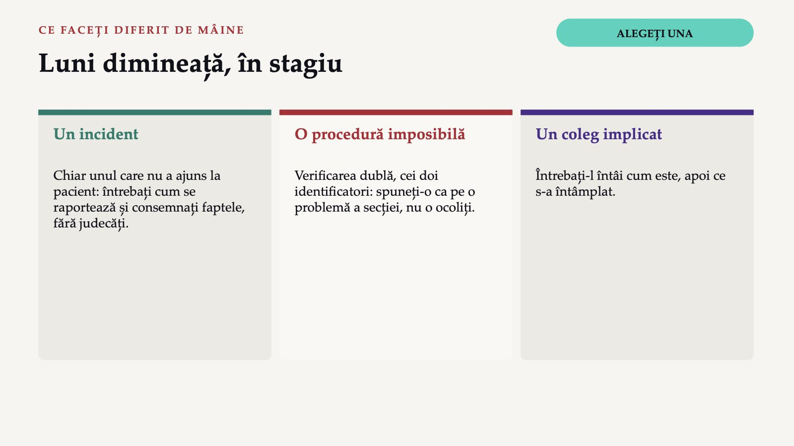
62 / 65Ce puteți face diferit de luni dimineață, în stagiu sau la primul loc de muncă? Alegeți unul dintre cele trei lucruri. Când vedeți un incident, chiar unul care nu a ajuns la pacient, întrebați cum se raportează pe secția respectivă și consemnați faptele, fără judecăți despre persoane. Când o procedură de siguranță nu se poate aplica, cum sunt verificarea dublă, identificarea cu doi identificatori sau separarea medicamentelor, spuneți-o ca pe o problemă a secției, nu o ocoliți în tăcere. Când un coleg a fost implicat într-un eveniment advers, întrebați-l întâi cum este, apoi ce s-a întâmplat.
Aceeași noapte, aceeași cauză
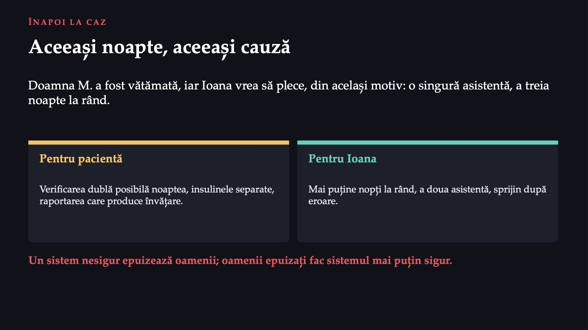
63 / 65Ne întoarcem la Secția B, pentru ultima dată. Doamna M. a fost vătămată, iar Ioana vrea să plece, din același motiv: o singură asistentă, a treia noapte la rând. Pentru pacientă, răspunsul sistemului este verificarea dublă posibilă noaptea, insulinele separate și o raportare care produce învățare. Pentru Ioana, sunt mai puține nopți la rând, a doua asistentă și sprijin după eroare. Cele două părți ale cursului se întâlnesc aici. Legătura este în ambele sensuri: un sistem nesigur epuizează oamenii, iar oamenii epuizați fac sistemul mai puțin sigur.
Ce rămâne din cursul de azi
![RECAPITULARE Ce rămâne din cursul de azi 1 Siguranța: absența vătămării evitabile; un pacient din 10 e vătămat. 2 Majoritatea greșelilor vin din sisteme: cum au cedat apărările? 3 ANMCS cere raportarea evenimentului advers și a incidentului care nu a ajuns la pacient. 4 Oamenii raportează când sunt protejați; cultura echitabilă păstrează răspunderea. 5 Un pacient în plus pe asistent: +7% șanse de deces; epuizarea e un fenomen ocupațional. Surse: registru A1123, A1124, A1131, A1139, A1137, A1070, A1138, A1136, A910, A894.](diapozitive/C05/064.jpg) 64 / 65
64 / 65Cinci idei rămân din cursul de azi. Siguranța pacientului înseamnă absența vătămării evitabile, iar, potrivit OMS, aproximativ un pacient din 10 este vătămat în cursul îngrijirilor. Majoritatea greșelilor care produc vătămare vin din sisteme și procese, de aceea întrebăm cum și de ce au cedat apărările, nu cine a greșit. Standardele ANMCS cer raportarea și analiza atât a evenimentului advers, cât și a incidentului care nu a ajuns la pacient. Oamenii raportează când sunt protejați de vină, iar cultura echitabilă păstrează răspunderea pentru comportamentul nechibzuit. În sfârșit, oamenii sunt și ei o condiție a siguranței: un pacient în plus pe asistent a fost asociat cu o creștere de 7% a șanselor de deces, iar epuizarea profesională este un fenomen ocupațional.
Trei întrebări pentru final
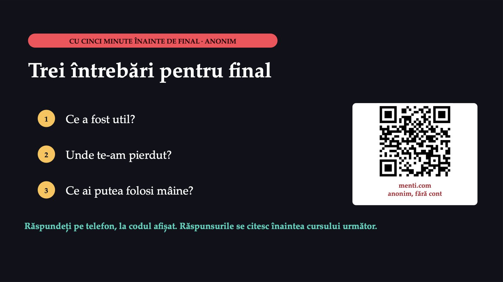
65 / 65Înainte să închidem întâlnirea din Teams, trei întrebări scurte, anonime, pe Mentimeter, fără cont; linkul este și în chat: ce a fost util, unde v-am pierdut și ce ați putea folosi mâine. Răspunsurile se citesc înaintea cursului următor. Vă mulțumesc.
Săgeți sau spațiu: navigare · O: vedere de ansamblu · N: notele prezentatorului · F: ecran complet · Esc: închidere